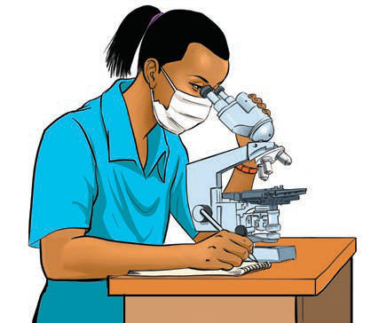

Figure 10: Laboratory technician using a microscope
(v) Devices such as telephone and computers used to simplify communications. Figure 11 shows a child using a telephone. These devices are connected through networks to enable communications.
Figure 11: Child using a telephone to communicate
Careers in Science
There are different careers in science. Among the careers in science are teaching, pharmacy, engineering, veterinary medicine, civil aviation, chemistry and botany.